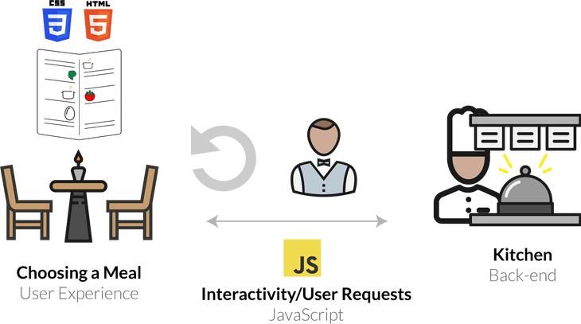
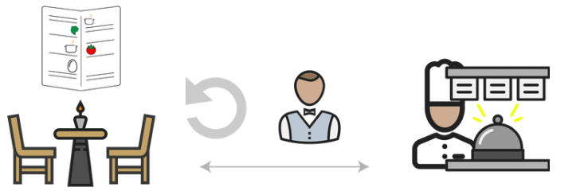
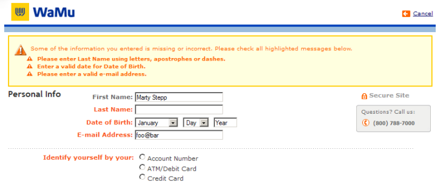
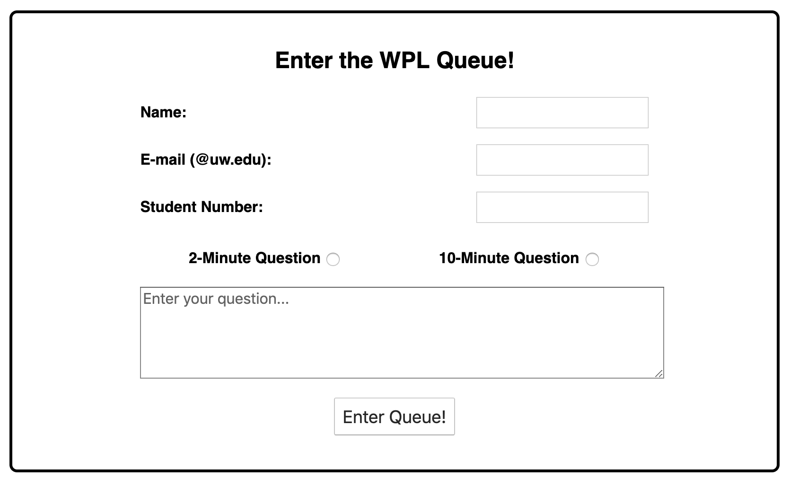

CSE 154
Lecture 14: Form Submission and Validation Methods
Agenda
HW3 Part A is due tonight (lock date also tonight)
Wrap-up APOD Example
Any questions?
Review: Web Services
Web service: software functionality that can be invoked through the internet using common protocols
It's like a remote function(s) you can call. Done by contacting a program on a web server
- Web services can be written in a variety of languages
- Many web services accept parameters and produce results
- Client contact the server through the browser using XML over HTTP and/or AJAX Fetch code
- The service's output might be HTML but could be text, XML, JSON, or other content
Some Web Services We've Used as Clients
Merriam-Webster Dictionary API
NASA APOD API
CSE154 web services:
- ajaxpets.php
- cafe.php
- pokedex.php and game.php
- recipe.php
HTTP Requests
GET, POST, PUT, DELETE
By default, fetch makes a GET request
POST is commonly used to make a request to submit some data
PUT and DELETE are less common, and we won't use them in this class.
GET vs. POST
GET
- Requesting data from a server using filters (URL parameters)
- Should never be used when dealing with sensitive data
- Can be cached and bookmarked, remains in browser history
- Examples: search queries, retrieving initial page content
POST
- Data sent in the HTTP message body, not the URL
- Not cached or bookmarked, no restrictions on data length
- Examples: Signing up, logging in, sending messages to a blog, etc.
These POST examples are commonly used with forms!
Client vs. Server
Motivating the Client-Server Relationship
We've used the analogy of a customer (client) ordering from a waiter at a restaurant (server). In this analogy, what might a customer ask for from "GET" request? What might a "POST" request be?
Image source (a wonderful reading to explain front-end vs. back-end/server relationships)
Client (JS) GET Request
When no security is needed, sending query parameters using a "GET" request (Parameters passed visibly in the URL bar or request header) is acceptable.
function requestMenu() {
let url = CAFE_URL + "?menu=cafe-menu";
//fetch by default is a GET request
fetch(url)
.then(checkStatus)
.then(resp => resp.json())
.then(handleResponse)
.catch(handleError);
}JS
Client (JS) POST Request
function adminLogin() {
let url = CAFE_URL;
// Create a new "FormData" object
let params = new FormData();
// Add the various parameters to the FormData object
params.append("username", "cse154");
params.append("password", "coffee");
// Fetch now with a method of POST and the param data in the body
fetch(url, {method: "POST", body: params})
.then(checkStatus)
.then(resp => resp.json())
.then(updateResults)
.catch(handleError);
}JS
Posting data with Forms
There are two ways you'll commonly see forms used with POST
- Older: With method/action attributes in HTML form tag
- Better: With JS using validation and AJAX
Posting with method/action attributes in <form> tag
<form id="input-form" method="post" action="submitter.php">
City: <input name="city" type="text"/ >
State: <input name="state" type="text" />
ZIP: <input name="zip" type="number" />
<button id="submit-btn">Submit!</button>
</form>HTML
As soon as the submit button is clicked on this page, the data is sent to the web service (submitter.php) and the page is refreshed with the response (sometimes redirecting).
This is becoming less common because we lose the asynchronous features of requests.
Approach 2: Posting data through JS/AJAX
<form id="input-form">
City: <input name="city" type="text"/ >
State: <input name="state" type="text" />
ZIP: <input name="zip" type="number" />
<button id="submit-btn">Submit!</button>
</form>HTML
let url = "submitter.php";
let params = new FormData(id("input-form"));
fetch(url, { method : "POST", body : params })
.then(checkStatus)
.then(...)
.catch(...)JS
Compare this new submit behavior here.
What do you think are the trade-offs between the two approaches?
Approach 2: Requires Preventing Default Submit Behavior
When an input is in a form along with a button, clicking the button automatically verifies the input and does a POST request.
If you do not want the page to refresh, you need to use preventDefault to override default form submission behavior (used in previous example).
function init() {
id("input-form").addEventListener("submit", function(e) {
// Fires when submit event happens on form
// If we've gotten in here, all HTML5 validation checks have passed
e.preventDefault(); // prevent default behavior of submit (page refresh)
submitRequest(); // do more validation with JS and then fetch with FormData
});
// rest of codeJS
Validation with HTML/CSS/JS
Many websites offer features that allow users to interact with the page and request/submit data to servers. Unfortunately, not all users will behave as expected.
Take a look at your handout and talk with your neighbors to answer the questions (handout also provided here).
User Input Validation
User input validation is the process of ensuring that any user input is well-formed and correct (valid).
Q: What are some examples of input validation you came up with?
- Preventing blank values (e-mail address)
- Verifying the type of values (e.g. integer, real number, currency, phone number, Social Security Number, postal address, email address, data, credit card number, ...)
- Verifying the format and range of values (ZIP code must be a 5-digit integer)
- Extra layer of confirmation (e.g. user types email twice, and the two must match)
A Real-World Example Form that Uses Validation

Real-World Example with Validation Feedback

When To Validate Data?
Validation can be performed:
-
Client-side (before any user input is submitted to a server)
- Can lead to a better user experience, allows for real-time feedback for invalid input. But shouldn't be used for user verification
-
Server-side (e.g. in PHP program, after user input is sent to the server)
- Needed for truly secure validation, but slower
- Should not skip this step under assumption that client-side validation was enough (why can't we trust all requests from a client?)
-
Both:
- Best mix of convenience and security, but requires most effort to program
An Example: A WPL Queue Tool

Importance of Validation in Web Development
Prioritizing validation is important as web developers so that the websites we build are:
- User-friendly
- Secure*
If you're interested in learning more, MDN has a good quick introduction to web security, and OWASP is a fantastic resource for all things related to web security. You can also find a good article on how to write user-friendly form UIs here.
The takeaway? There are many ways to perform validation, but MDN/OWASP both are great resources to refer to based on the context of your websites
Most importantly, don't trust that users will provide correct/safe input!
Back to our Form Example
<form>
<label for="city-input">City: </label>
<input name="city" type="text" />
<label for="state-input">State: </label>
<input name="state" type="text" />
<label for="zip-input">ZIP: </label>
<input name="zip" type="number" />
<button id="submit-btn">Submit!</button>
</form>HTML
output
We can validate this input in a few different ways:
- Client-side: HTML5 form elements and input tag attributes
- Client-side: JS before sending this form data to the server (e.g. a PHP web service)
- Server-side: (later)!
HTML5 Input Validation
We've already seen some ways to use HTML5 tags to require certain types of input by
adding attributes to your <input> tags to help with validation
<input type="number">HTML
We can limit the up and down arrows with min (and max if we choose)
<input type="number" min=0>HTML
To insist that there is a value in the input field we can add required
<input type="number" required>HTML
To prevent a user from being able to type in erroneous values, we can add a
regular expression to the required attribute
<input type="number" required="\d+">HTML
Basic HTML5 Validation with our basic form
<form>
<label for="city-input">City: </label>
<input name="city" type="text" required/>
<label for="state-input">State: </label>
<input name="state" type="text" size="2" maxlength="2" required/>
<label for="zip-input">ZIP: </label>
<input name="zip" type="number" size="5" min=10000 max=99999 required/>
<button id="submit-btn">Submit!</button>
</form>HTML
Forms are HTML elements that can be used to "package" user input values based on the name attribute, often used with POST requests. There are many neat ways to perform validation with the right choice of form elements!
Short Case Study: WPL Queue!
Solution code (try adding more validation methods on your own!):
wpl.html Form (with Validation Attributes)
<form id="input-form">
<div>
<label for="name-input">Name: </label>
<input id="name-input" name="student-name" type="text" required/>
</div>
<div>
<label for="email-input">E-mail (@uw.edu): </label>
<input id="email-input" name="email" type="email" required/>
</div>
<div>
<label for="sid-input">Student Number: </label>
<!--
A valid student number is 7 digits; demo considering students between 2010 (min) and 2019
(max) to demonstrate min/max
-->
<input id="sid-input" name="sid" type="number" min=1000000 max=1999999 />
</div>
<div id="minute-options">
<label>2-Minute Question <input type="radio" name="minutes" value=2 /></label>
<label>10-Minute Question <input type="radio" name="minutes" value=10 /></label>
</div>
<textarea name="question" minlength=20 rows=10 placeholder="Enter your question..."></textarea>
<button id="submit-btn" type="submit">Enter Queue!</button>
</form>HTML
wpl.js - Preventing Default Form Submit Behavior
/**
* Override the default submission behavior for the form's submit event.
*/
function init() {
id("input-form").addEventListener("submit", function(evt) {
// if we've gotten in here, all HTML5 validation checks have passed
evt.preventDefault();
submitRequest();
});
}wpl.js
wpl.js - Sending Form Data with POST (with form argument)
/**
* Send form data to the WPL web service. Note that this function
* is called only after all HTML5 validation constraints
* (e.g. required attributes) have passed!
*/
function submitRequest() {
// Solution 1: Can use form DOM element as parameter to FormData!
let params = new FormData(id("input-form"));
// Note that unlike GET requests, no url parameters passed in a POST request!
fetch(URL, { method : "POST", body : params })
.then(checkStatus) // The wpl.php will return text for this demo, no JSON
.then(resp => resp.json())
.then(showResponse)
.catch(handleError);
}wpl.js
This submitRequest() function is called in the overriden submit behavior
(from previous slide).